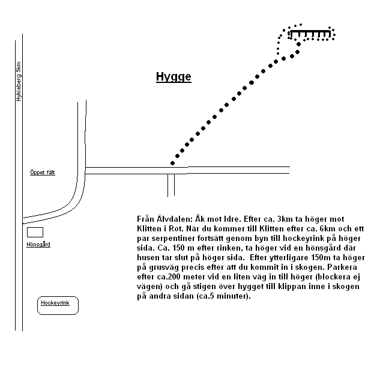

Vitturn
Lat: 61.278071
Long: 14.119148
Allmänt
Vitturn ligger vid byn Klitten utanför Älvdalen och är trots den ringa storleken på max tio meter en av Dalarnas finaste sportklippor tack vare mycket bra klippkvalité (nån mysko sandsten) och det fina sydläget på toppen av ett berg med fantastisk utsikt som kan matchas av få klätterklippor i landet. En perfekt klippa för trevlig fikaklättring soliga sommarkvällar. De flesta ankarna saknar tyvärr kjeda, men det kommer att åtgärdas. Högt och öppet sydläge möjligör klättring från mars till sen oktober.
Vägbeskrivning

Camping
Eldstäder finns nedanför insteget och en bit ovanför utsteget på led 19. I anslutning till eldstaden på toppen finns även bra tältplatser. Inget vatten finns på plats.
Vänstra delen

- 1
- Feghörnet
- 5
- Klättra hörnets högra vägg utan att kliva ut till vänster, sedan lätt klättring upp till ankaret. 4bb+2bb i toppen.
- 2
- Gubben Einar
- 4
- Längsta turen. Starta i spricka upp till en nisch. Klättra upp till Feghörnets ankare via diverse formationer och vidare upp till höger om detta. En borrbult gemensamt med Feghörnet.
- 3
- Skitig spricka
- 4
- Sprickan bakom granen
- 4
- Inget är för evigt
- 6-
- 3bb + kil i slutet. Variant är att klättra utsteget på Jackpot.
- 5
- Jackpot
- 6
- 3bb + ev.liten kil i början.
- 6
- Eufori
- 6
- 4bb+ 2 borrbultar i toppen gemensamt med led 5.
- 7
- Faktotum
- 6+
- Camalot 0.75 i början sedan 1bb + kil i slutet 2bb i toppen. Sten/Grepp har lossnat under 2012, svårighetsgraden har bedömt ökat.
- 8
- Den mystiska spegeln
- 7-
- Vitturns hårdaste kiltur. Små kilar och friends. Går att toppa/fira av med led nios ankare.
- 8a
- Öppet projekt
- projekt
- Rakt upp till höger om Faktotum.
- 9
- Sköna myran
- 7/7+
- 4bb+2bb i toppen.
- 10
- Fungus
- 8-
- Vitturns hårdaste tur. Svårighetsgraden har möjligen ökat något efter att steg har lossnat under våren-03.
- 10a
- Variant av Fungus
- 7-
- Undgå kruxet genom att gå ut till vänster vid första bulten och hangla efter rampen. 4bb.
- 11
- Dystopia
- 6
- Klättra upp till vänster om Grov utan att använda sprickan. 4bb+ankare med kedja.
Högra delen

- 12
- Grov
- 5+
- Den stora sprickan med nischen. Välsäkrad med kilar och Hex#10 el. 11.
- 16
- Sarajevo by night
- 7+
- 3bb+2bb i toppen.
- 17
- Till Saras Egypten
- 5+
- Hangla på utsidan av rampen sedan rakt upp. Små kilar+ liten friend.
- 17a
- Egypten direkt
- 6-
- Direktinsteg rakt upp till hyllan
- 22
- Sydpillaren
- 7
- Rakt upp utan att använda sprickan till vänster. Boulderkaraktär. 2bb+2 i toppen.
- 23
- Vegas world
- 4
- Sveriges brantaste fyra?
Kategori:Sport
Kategori:Dalarna
Copyright (C) Permission is granted to copy, distribute and/or modify this document under the terms of the GNU Free Documentation License, Version 1.3